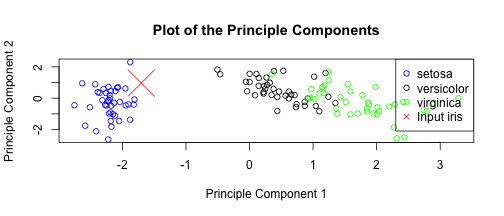

Know your iris
A submission for the Coursera Developing Data Products assignment
Ever had an iris and been unable to classify it neatly?
Fear no more, the power of machine learning is here to help!
To access the iris classifier, click here
This presentation tells you more about how the iris classifier works.
The iris dataset
'The Iris flower data set or Fisher's Iris data set is a multivariate data set introduced by Sir Ronald Fisher (1936) as an example of discriminant analysis.'
Wikipedia, http://en.wikipedia.org/wiki/Iris_flower_data_set, accessed 22/6/2014
It contains 150 observations of 5 variables: Sepal.Length, Sepal.Width, Petal.Length, Petal.Width, Species
PreProcessing
Using the preProcess function from the Caret library, we can see that these 4 variables boil down to 2 principle components:
preProc <- preProcess(iris[, -5], method = "pca", thresh = 0.9)
preProc
##
## Call:
## preProcess.default(x = iris[, -5], method = "pca", thresh = 0.9)
##
## Created from 150 samples and 4 variables
## Pre-processing: principal component signal extraction, scaled, centered
##
## PCA needed 2 components to capture 90 percent of the variance
Model and prediction
It's quick to train a random forest model on a dataset of this size.
intraining <- createDataPartition(iris$Species, p = 0.8, list = FALSE)
train <- iris[intraining, ]
preProc2 <- preProcess(train[, -5], method = "pca", thresh = 0.9)
trainingPCA <- predict(preProc2, train[, -5])
trainingPCA$Species <- train$Species
model <- train(Species ~ ., data = trainingPCA, method = "rf")
test <- iris[-intraining, ]
testingPCA <- predict(preProc2, test[, -5])
predict <- predict(model, testingPCA)
out <- table(predict == test$Species)
##
## FALSE TRUE
## 4 26
Output
So then we can run predictions against values submitted through the iris classification tool:
input <- data.frame(Sepal.Length = 5.2, Sepal.Width = 2.8, Petal.Length = 1.8,
Petal.Width = 0.1)
inputPCA <- predict(preProc, input)
predict <- predict(model, inputPCA)
predict
## [1] setosa
## Levels: setosa versicolor virginica
